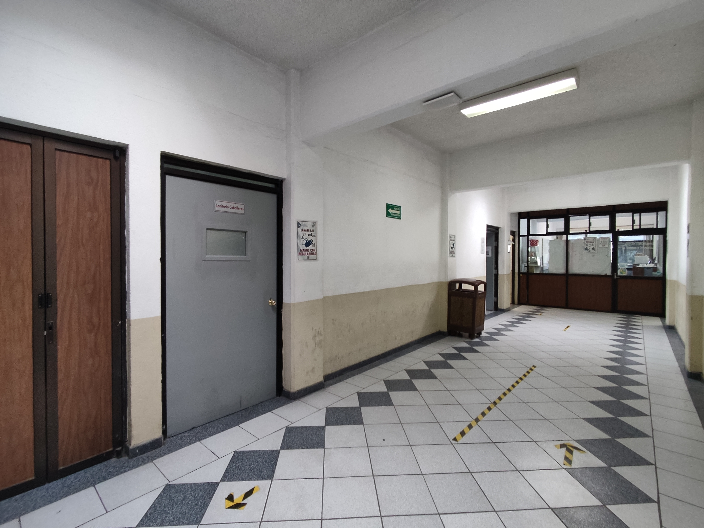
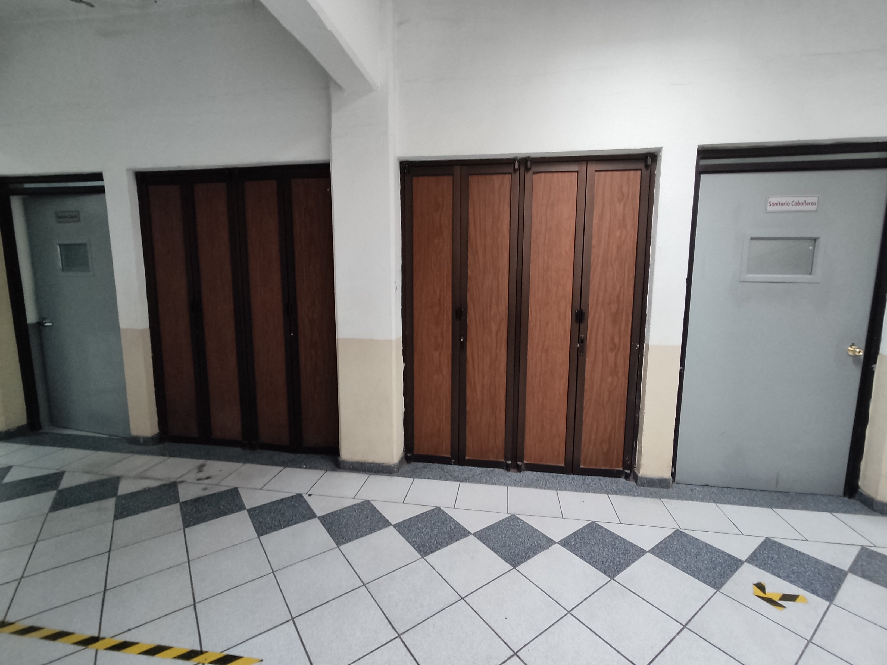
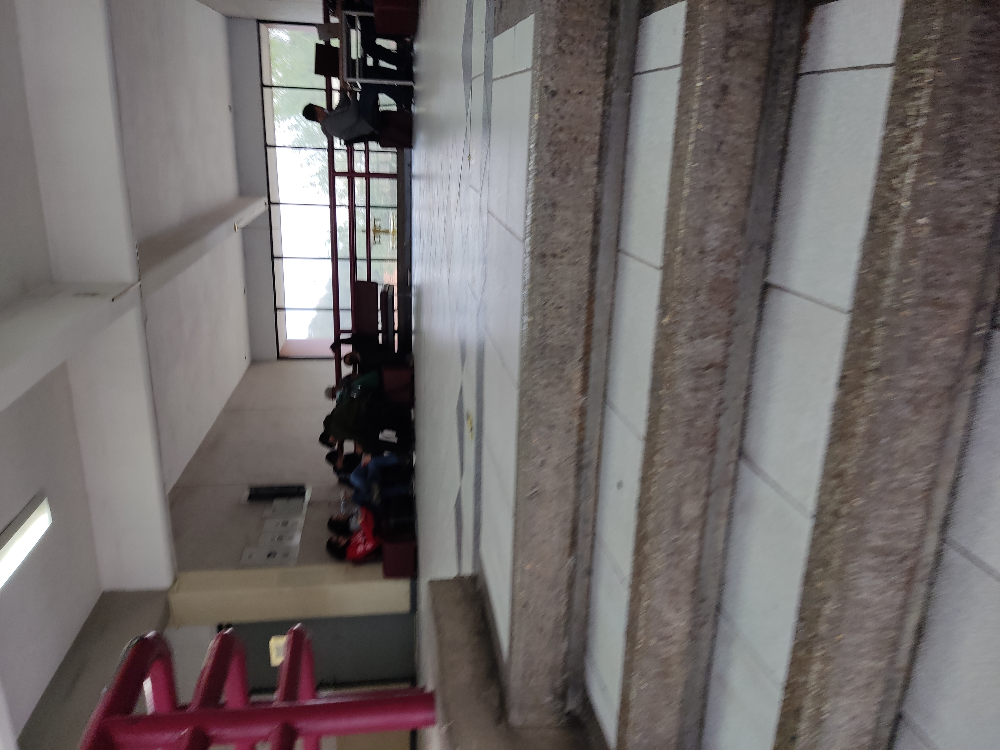
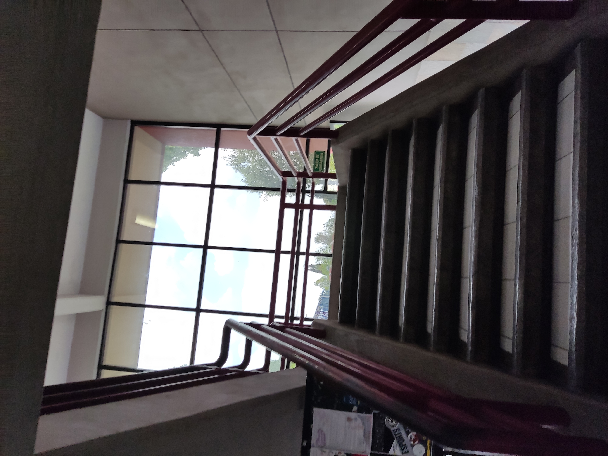
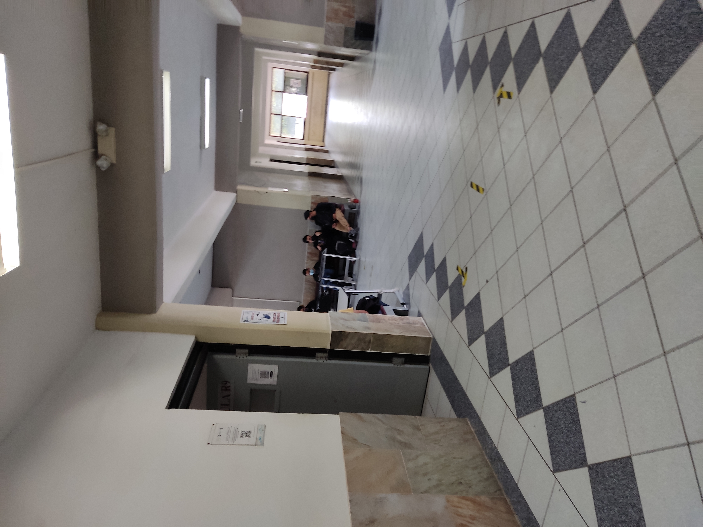
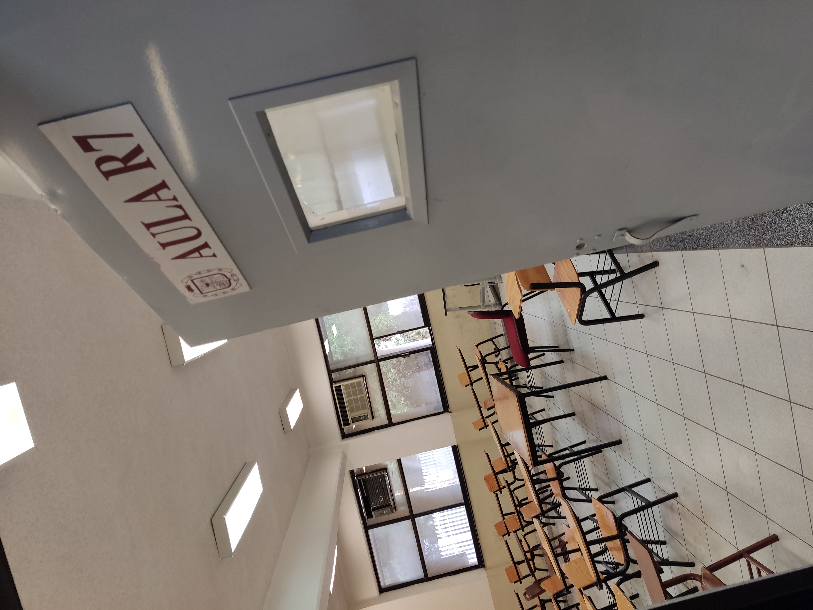
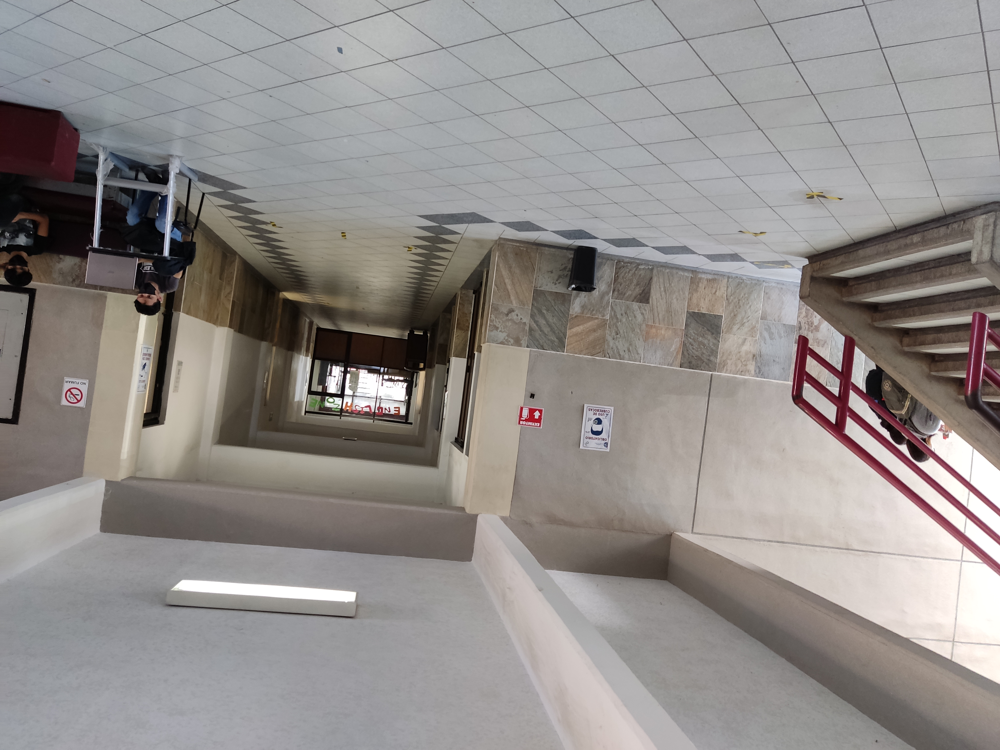
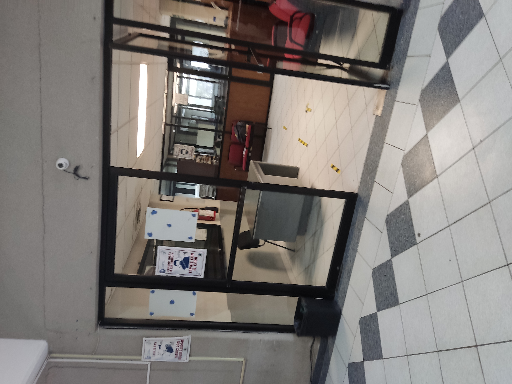
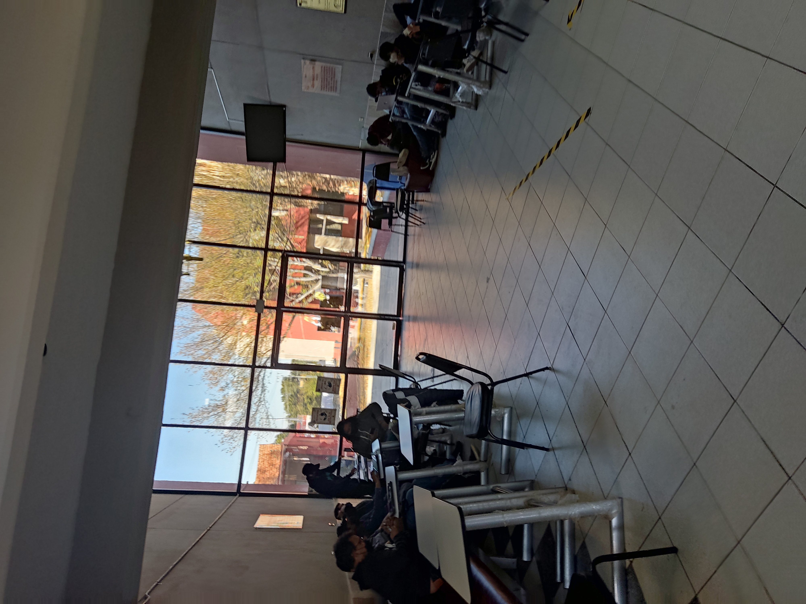
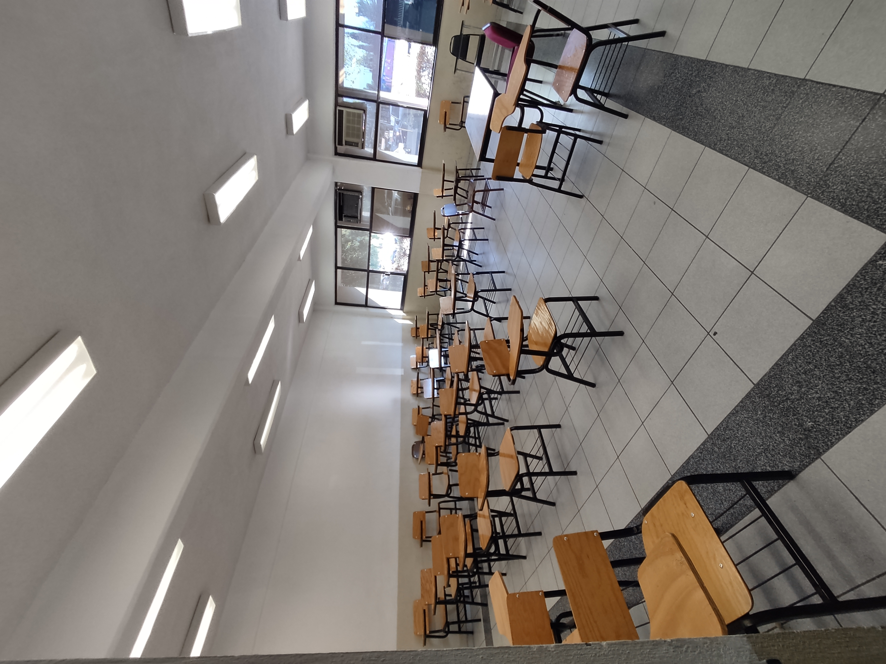

Instituto Tecnológico de Saltillo
|  |  |  |  |
 |
 |  |
 |
 |
 |  |
 |
|  |  |  |  |
Sillones
Es un espacio especialmente pensado para alumnos puedan hacer su tarea
Salones
En el edificio de sistemas hay 2 tipos diferentes de salones los laboratorios
y los salones normales sin computadoras